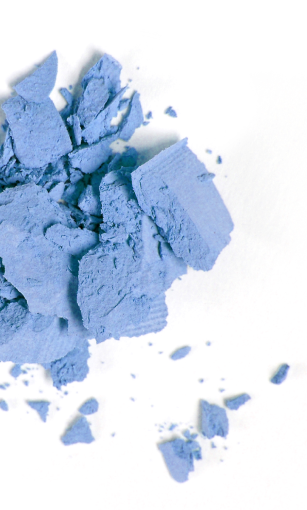
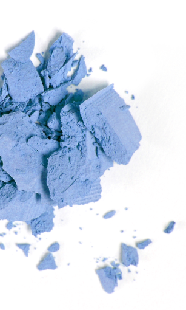
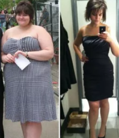

Похудевшая на 45 кг Адель поделилась своей новой фотографией, и рассказала секрет своего преображения


5 мая известная певица и обладательница 15 премий «Грэмми», «Оскара» и «Золотого глобуса» Адель
отпраздновала свой 32-й
День Рождения. В последнее время исполнительница находилась немного в тени и даже не слишком часто обновляла
свой
аккаунт в Инстаграме. Однако недавно она обратилась к соцсетям, чтобы поблагодарить людей за то, что они
написали ей
теплые пожелания ко Дню рождения вместе с фотографией, от которой ее поклонники потеряли дар
речи.
Вот как выглядела Адель в 2013 году, во время 85-й ежегодной церемонии вручения премии
«Оскар»

Тогда певица тоже выглядела очень мило и все привыкли к её образу, но, по её признанию, ей
самой было очень некомфортно
находиться в таком весе
В начале своей карьеры исполнительница весила 132 кг, но со временем ей удалось немного похудеть, однако
полностью
избавиться от лишнего веса она не могла.
И вот, в 2019 году, после развода с Саймоном Конеки, Адель начала стройнеть и это стали замечать её фанаты
К сегодняшнему дню певица полностью преобразилась и показала, как она выглядит сейчас, выложив новое фото к
своему 32-му
Дню Рождения
Вот как Адель выглядит сейчас :

Она не только очень постройнела, но и помолодела как минимум на 10 лет!
Поклонники не могли не заметить ее удивительное преображение и начали интересоваться у певицы как ей это
удалось за
такое короткое время!
Адель не оставила без внимания вопросы своих поклонников и ответила им уже в следующем посте. вот что она
написала:
“ У меня никогда не было комплексов по поводу лишнего веса. Но я стала замечать, что у
меня ухудшилось самочувствие,
появилась одышка и я поняла что надо что то менять...Я хочу оставаться здоровой ради своего сына.
Я начала с усиленных тренировок на тренажерах, поменяла питание, отказалась от вредных привычек, это дало
небольшой
эффект, но не тот который я ожидала и тем более я не достигла того результата которого хотела.”
Примерно в то же время Адель познакомилась с каплями Slimagic, о которой мы уже подробно рассказывали. SLIMAGIC – натуральный концентрат для сжигания висцерального (глубокого) и подкожного жира, оказывает комплексное воздействие на организм, насыщая витаминами и минералами. Растительный концентрат насыщает организм витаминами A, E, группы B, стимулирует активное жиросжигание без причинения вреда здоровью. Устраняет целлюлитные образования на бедрах, животе и руках уже на 2-ой неделе применения. Принимая эти капли не придётся голодать, можно даже пить красное вино и есть тёмный шоколад, и они позитивно влияет на состояние нервной системы.

В прошлом году певица, получившая Грэмми, отправилась в путешествие по снижению веса с Slimagic , и
результаты, которых
она достигла, заставили ее поклонников потерять дар речи. Певице удалось сбросить 45 кг всего за пару
месяцев и сейчас
она выглядит великолепно!
Вот что она написала в своих соц сетях:
“Самое главное в похудении - не навредить своему организму. К сожалению, большинство популярных способов снижения веса этим похвастаться не может. На диете нельзя сидеть постоянно, да и выдерживают её далеко не все. Не добившись цели, люди обращаются к таблеткам, подавляющее большинство которых лишь угнетает организм, провоцируя сбои в работе организма Снижение веса должно быть естественным и не нарушать внутренних процессов в организме. На сегодняшний день, Slimagic - единственное средство, отвечающее этим задачам. Активные микроэлементы препарата провоцируют ускорение обмена веществ и сжигание жировой массы как минимум в 10 раз. Я убеждена, что это средство - лучшее, что есть сегодня в современной диетологии. И я попробовала его на себе и добилась потрясающих результатов не причиняя вреда своему организму. Думаю, - 45 кг за два месяца - это успех!”
 Источник: https://www.instagram.com/adele/
Вот так певица выглядит сейчас
Источник: https://www.instagram.com/adele/
Вот так певица выглядит сейчас
“ Slimagic я пила утром со стаканом воды.И уже через неделю я была приятно удивлена результатами. Моя энергия была на максимуме, и при этом я не была голодна и не изнуряла себя тренировками. Через неделю я взвесилась и увидела что похудела на 4 кг. Я продолжала пить капли по утрам и занималась своими повседневными делами а вес уходил сам собой. На четвертой недели я, когда я взвесилась то была просто в восторге, мой вес уменьшился на 14 кг. По прошествии двух месяцев я вешу на 45 килограмм меньше!!! Я очень рада, что могу поделиться с вами моими достижениями, а еще больше рада что могу вам рассказать о том как я этого добилась. Будьте здоровы берегите себя и следите за своим здоровьем!” так Адель заканчивает свой пост.
Slimagic получил сертификацию в Греции, и, пока он не появится в аптеках, самый надежный способ купить этот
продукт -
заказать его на официальном сайте поставщика. Это гарантирует его качество и убережет вас от подделок.
Чтобы оформить заявку достаточно вписать свои ФИ и номер телефона для связи на официальном сайте продукта
"SLIMAGIC" и
дождаться звонка менеджера для подтверждения заказа


Комментарии
Ой, какая она молодец, изменилась до неузнаваемости!!! Её обожаю)
ОтветитьЯ смогла похудеть на 31 кг Мой вес составлял 94 кг Я помню как мне было тяжело в начале, а получится или нет, а это эффективно или нет. Сложно, когда тебя не поддерживают, особенно, когда твой вес огромный, но "SLIMAGIC" сжег все килограммы, никак не ожидала таких результатов!
Я уже слышала про эти капли и даже заказала, принимаю только неделю, но не поверите, но за первые 7 дней я скинул 3 кг и осталось только 18! У меня всё получится! Должно :)
ОтветитьНадо попробовать, если у Адель получилось!
ОтветитьЯ в шоке!!! Это она её прямо не узнать, неужели такое бывает!
ОтветитьДа, врет она всё, операцию сделала наверное.Не помогает, пробовала я эти капли. Ерунда и ложь.
ОтветитьЗдравствуйте, Анна и спасибо за сообщение. Это очень странное утверждение, так как наш продукт имеет все свидетельства и сертификации, прошёл реальные испытания. После консультации с нашими специалистами - мы рекомендуем вам проверить свой дневной рацион. Возможно при его приеме вы неосознанно стали НАМНОГО больше есть? Тогда отсутствие прогресса объяснимо - препарат помогает, но вы этого не видите в зеркале? Ещё раз спасибо за ответ и хорошего дня.
ОтветитьПроверила, действительно стала есть больше(((
ОтветитьТогда предлагаем вам произвести покупку препарата ещё раз, но полным курсом.
ОтветитьТак и сделала - спасибо, помогло!!!)
Мне тоже удалось похудеть! Всем удачи,мысленно поддерживаю всех кто борется с лишним весом!
ОтветитьМне как и Адель очень помогло это средство. Огромная разница между тем что было и что стало теперь. Никак не ожидала, что в свои года могу скинуть почти 40 кг (пока что -37 кг). Самочувствие просто отличное! Такое решение для таких как я просто идеально! Рекомендую SLIMAGIC однозначно! Вот мои результаты:
Перед началом приема пастилок "SLIMAGIC" я весил 90 кг. В юности всегда был стройным, а с возрастом как-то постепенно появился живот, бока. В 35 лет понял, что нужно срочно приводить себя в порядок. Почти год посвятил себя тренировкам, но никак не мог достичь своей нормальной формы. Потом добавил в рацион "SLIMAGIC" и буквально за несколько недель превратился в того человека, которого помню с юности. Теперь берегу свою фигуру, а пара упаковок "SLIMAGIC " у меня всегда стоит в запасе
ОтветитьПосле родов если вес набирается, то надо срочно сгонять либо в на беговой дорожке по несколько часов, но это слышала очень вредно для суставов, ведь это по сути прыжки с лишним весом, суставы просто не выдерживают. Либо "SLIMAGIC" как я принимать, очень удобно восстанавливаться. Странно, что ещё не все знают об этом средстве.
ОтветитьЯ тоже использовала эти капли. Всего за 1 полный курс с "SLIMAGIC" ушло почти 30 кило, очень большие изменения, просто огромные. Ну тортами конечно я не обжираюсь, но в остальном не ограничиваюсь. Хочу картошку - ем картошку.
 Ответитьофициальный сайт производителя - это единственное место, где можно взять "SLIMAGIC" в нашей стране или его еще продают в интернет-магазинах каких-нибудь?
ОтветитьВасилиса, к сожалению но да, так как аптеки пытаются нажиться на людях, а мы пытаемся им помочь их проблемами со здоровьем, то они отказались ставить цену производителя, поэтому приходится продавать в интернете так как тут мы можем ставить ту цену которая приемлема для вас.
ОтветитьКруто, если это реально работает. Хотя я скептик. И больше могу поверить в силу коктейля, чем каких-то капель. Но чего не сделаешь ради фигуры, буду заказывать.
ОтветитьЯ уже давно "SLIMAGIC" пью. Тоже были проблемы с весом, но теперь даже не думаю об этом, ем все подряд, а если поправилась, курс попила и опять в норме.
ОтветитьВО МНЕ 97 КГ. КАК ИХ УБРАТЬ НЕ ЗНАЮ. НЕ ХОЧУ, ЧТОБЫ ПЕРЕВАЛИЛО ЗА 100. ЧТО МНЕ ДЕЛАТЬ????? ПОМОГИТЕ!!!!!!! МОЖНО ЛИ НАЙТИ В АПТЕКЕ "SLIMAGIC"??????
ОтветитьТатьяна, ну поискать, конечно, можно, но я только на официальном сайте производителя его нашла, да и так надежнее и еще можно на акцию попасть
ОтветитьДобрый день, Татьяна. На данный момент "SLIMAGIC" можно приобрести только на нашем официальном сайте.
Ответить